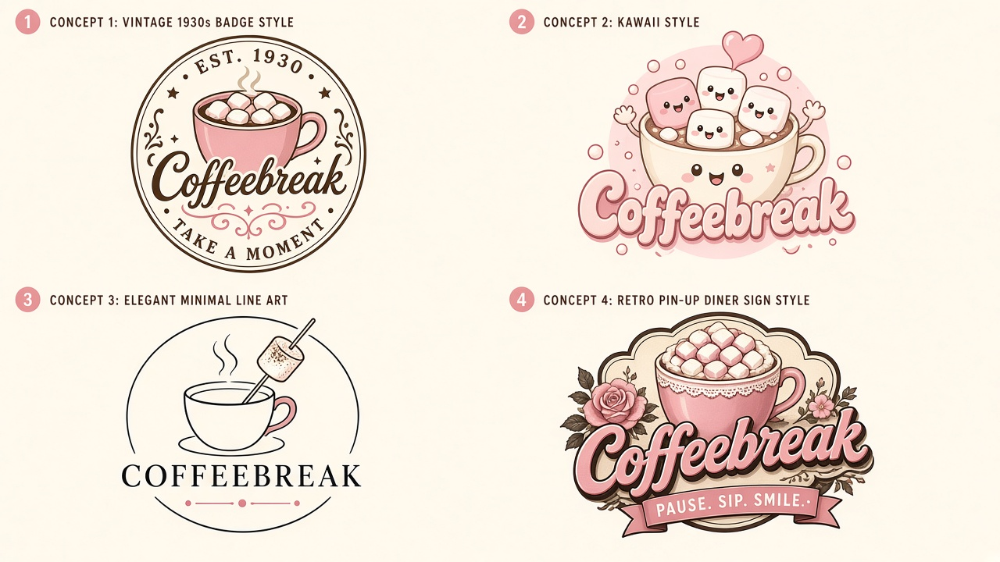

Pick Truth or Dare
Original prompts by Coffeebreak. For consenting adults only. Fictional, no real people.

This app has adult themes. Please confirm you are 18 or over.
This cheeky party game is for consenting adults 18 and over. Enter your date of birth.
Original prompts by Coffeebreak. For consenting adults only. Fictional, no real people.
Questions, custom orders or anything else? Send me a message.
☕ Free to use — tip if you like: PayID darkokaz@gmx.com (Teachers Mutual Bank). Put the app name in the reference.
Disclaimer: Provided as is for personal and entertainment use; not professional, medical, legal or financial advice. Coffeebreak and app names are trademarks of Karen O'Brien. Other brands belong to their owners.